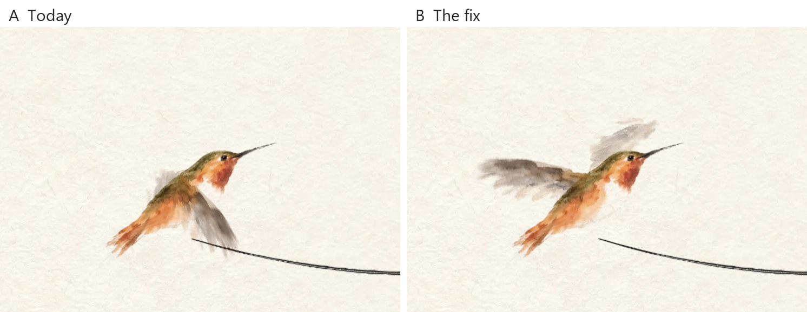
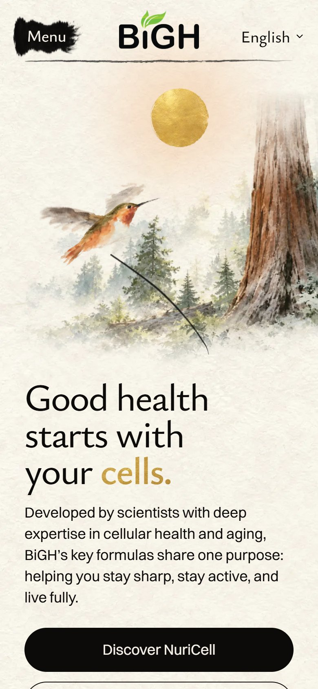

<title>Hummingbird Wingbeat</title>
<meta name="claude:viewport-fit-sides" content="cover">
<link rel="preconnect" href="https://fonts.googleapis.com">
<link rel="preconnect" href="https://fonts.gstatic.com" crossorigin>
<link rel="stylesheet" href="https://fonts.googleapis.com/css2?family=Ysabeau+Office:wght@500;600&family=Inter:wght@400;500&display=swap">
<style>
  /* One column, read top to bottom on a phone: the answer, the slow film, the real-speed film, two stills. */
  :root {
    --paper: #f6f2ea;
    --ink: #1d1b18;
    --muted: #5f5a52;
    --rule: #ddd5c6;
    --card: #fffdf8;
    --gold: #a8842f;
    --display: "Ysabeau Office", "Ysabeau", Georgia, serif;
    --body: "Inter", system-ui, -apple-system, "Segoe UI", sans-serif;
  }
  @media (prefers-color-scheme: dark) {
    :root:not([data-theme="light"]) {
      --paper: #1b1a17; --ink: #efe9dd; --muted: #b3ab9c; --rule: #3a362f; --card: #24221e; --gold: #d2ad55;
      color-scheme: dark;
    }
  }
  :root[data-theme="dark"] {
    --paper: #1b1a17; --ink: #efe9dd; --muted: #b3ab9c; --rule: #3a362f; --card: #24221e; --gold: #d2ad55;
    color-scheme: dark;
  }
  body {
    background: var(--paper);
    color: var(--ink);
    font: 400 17px/1.55 var(--body);
  }
  main {
    max-width: 760px;
    margin: 0 auto;
    padding-block: 32px 64px;
    padding-left: max(16px, env(safe-area-inset-left, 0px));
    padding-right: max(16px, env(safe-area-inset-right, 0px));
    display: grid;
    gap: 36px;
  }
  h1, h2 { font-family: var(--display); font-weight: 600; text-wrap: balance; margin: 0; }
  h1 { font-size: clamp(30px, 6vw, 42px); line-height: 1.1; }
  h2 { font-size: 23px; line-height: 1.2; }
  p { margin: 0; max-width: 62ch; }
  ul { margin: 0; padding-left: 1.2em; display: grid; gap: 6px; }
  .lead { font-size: 19px; }
  .muted { color: var(--muted); font-size: 15px; }
  section { display: grid; gap: 12px; }
  figure { margin: 0; display: grid; gap: 8px; }
  video, img {
    width: 100%;
    max-width: 100%;
    height: auto;
    display: block;
    border: 1px solid var(--rule);
    border-radius: 6px;
    background: #f5f0e6;
  }
  .phone img { max-width: 300px; }
  figcaption { color: var(--muted); font-size: 15px; }
  .score {
    background: var(--card);
    border: 1px solid var(--rule);
    border-radius: 8px;
    padding: 16px 18px;
    display: grid;
    gap: 8px;
  }
  .score strong { color: var(--gold); font-family: var(--display); font-size: 22px; }
  .ab { display: flex; flex-wrap: wrap; gap: 8px 20px; font-weight: 500; }
</style>

<main>
  <header style="display:grid;gap:12px">
    <h1>The hummingbird's wings, fixed</h1>
    <p class="lead">Now the wings stay up. They fan from raised to level with the shoulder and never swing down by the belly.</p>
  </header>

  <section>
    <h2>What real hummingbirds do</h2>
    <ul>
      <li>They sweep their wings forward and back, in a flat figure 8, at shoulder height.</li>
      <li>From the side, the wing tip stays near the shoulder. It never reaches the belly.</li>
      <li>Source: a 2007 flight study of the rufous hummingbird (Allen's closest cousin), and side-view photos of hovering birds, where the wing reaches back level with the shoulder.</li>
    </ul>
  </section>

  <section>
    <h2>Slow motion: one beat in about a second</h2>
    <div class="ab"><span>A · Today</span><span>B · The fix</span></div>
    <figure>
      <video src="slow.mp4" autoplay muted loop playsinline></video>
      <figcaption>Slowed down about nine times. In A the wing drops through the shoulder and comes out by the belly. In B it fans above the back.</figcaption>
    </figure>
  </section>

  <section>
    <h2>Real speed, as on the homepage</h2>
    <figure>
      <video src="arrive.mp4" autoplay muted loop playsinline></video>
      <figcaption>Ten beats a second while the bird arrives, three slower beats, then it rests, raised as painted. The rest pose has not changed.</figcaption>
    </figure>
  </section>

  <section>
    <h2>The lowest moment of the beat</h2>
    <figure>
      
      <figcaption>A: the wing hangs by the belly. B: the wing points back, level with the shoulder, like the photos.</figcaption>
    </figure>
  </section>

  <section class="phone">
    <h2>On a phone</h2>
    <figure>
      
      <figcaption>The first screen, paused at the same lowest moment.</figcaption>
    </figure>
  </section>

  <section class="score">
    <strong>My score: 8.5 / 10</strong>
    <p>It now looks like a hummingbird, and it is on the built site. What holds it back:</p>
    <ul>
      <li>It is the painted wing turning, not a new painting for each pose. So paused at the lowest moment, the far wing lies flat over the head like a little crest. At real speed it is only a blur.</li>
      <li>It beats ten times a second. A real one beats about forty, which a screen can't show without the wings seeming to crawl.</li>
    </ul>
    <p class="muted">Films are built from the six wing frames shot on the built homepage. A is the public demo today. Nothing is live yet.</p>
  </section>
</main>
